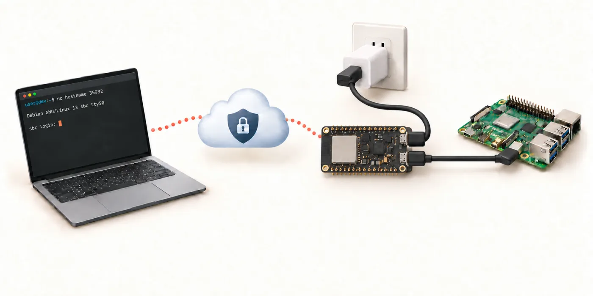
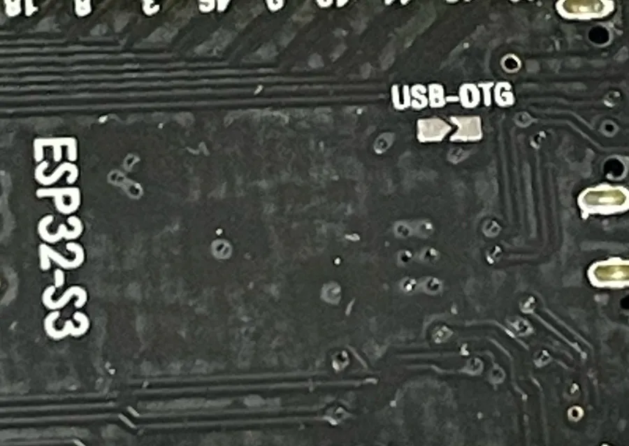

__VERSION__


N16R8 (16 MB, 8 MB PSRAM) N8R8 (8 MB, 8 MB PSRAM) N4R8 (4 MB, 8 MB PSRAM) N16R2 (16 MB, 2 MB PSRAM) N8R2 (8 MB, 2 MB PSRAM) N4R2 (4 MB, 2 MB PSRAM) WROOM-2 N16R8V (16 MB octal, 8 MB PSRAM) WROOM-2 N32R8V (32 MB octal, 8 MB PSRAM)
github.com/signal-slot/usb-serial-over-tailscale